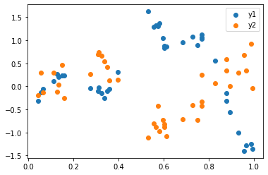
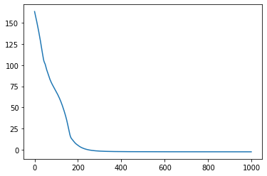
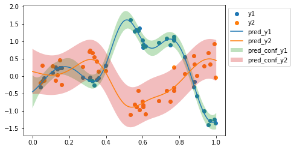

import jax
from jax.flatten_util import ravel_pytree
import jax.numpy as jnp
import optax
import matplotlib.pyplot as plt
from tinygp import kernelsInspired from this GPSS video.
- ICM - Intrinsic coregionalization model
- SLFM - Semiparametric Latent Factor Model
- LMC - Linear model of coregionalization
Helper functions
def random_fill(key, params):
values, unravel_fn = ravel_pytree(params)
random_values = jax.random.normal(key, shape=values.shape)
return unravel_fn(random_values)
def get_real_params(params):
for i in range(1, q_len+1):
params[f'a{i}'] = params[f'a{i}'].reshape(n_outputs, rank)
if method == 'icm':
params['var'] = jnp.exp(params['log_var'])
params['scale'] = jnp.exp(params['log_scale'])
params['noise'] = jnp.exp(params['log_noise'])
elif method == 'lmc':
for i in range(1, q_len+1):
params[f'var{i}'] = jnp.exp(params[f'log_var{i}'])
params[f'scale{i}'] = jnp.exp(params[f'log_scale{i}'])
params[f'noise{i}'] = jnp.exp(params[f'log_noise{i}'])
return params
def kron_cov_fn(params, x1, x2, add_noise=False):
params = get_real_params(params)
a_list = [params[f'a{i}'] for i in range(1, q_len+1)]
if method == 'icm':
kernel_fn = params['var'] * kernels.ExpSquared(scale=params['scale'])
cov = kernel_fn(x1, x2)
if add_noise:
cov = cov + jnp.eye(cov.shape[0])*params['noise']
B = jax.tree_util.tree_reduce(lambda x1, x2: x1@x1.T+x2@x2.T, a_list)
# print(B.shape, cov.shape)
return jnp.kron(B, cov)
elif method == 'lmc':
cov_list = []
for idx in range(1, q_len+1):
kernel_fn = params[f'var{idx}'] * kernels.ExpSquared(scale=params[f'scale{idx}'])
cov = kernel_fn(x1, x2)
if add_noise:
cov = cov + jnp.eye(cov.shape[0])*params[f'noise{idx}']
B = a_list[idx-1]@a_list[idx-1].T
cov_list.append(jnp.kron(B, cov))
return jax.tree_util.tree_reduce(lambda x1, x2: x1+x2, cov_list)Configuration
q_len = 2
rank = 2 # if 1, slfm
n_outputs = 2
method = 'lmc' # lmc, icmif rank = 1, lmc becomes slfm.
Generative process
x_key = jax.random.PRNGKey(4)
x = jax.random.uniform(x_key, shape=(40, 1)).sort(axis=0)
x_test = jnp.linspace(0,1,100).reshape(-1, 1)
e1_key, e2_key = jax.random.split(x_key)
e1 = jax.random.normal(e1_key, shape=(x.shape[0],))
e2 = jax.random.normal(e2_key, shape=(x.shape[0],))
if method == 'icm':
noise = 0.01
gen_kernel = 1.2*kernels.ExpSquared(scale=0.2)
gen_covariance = gen_kernel(x, x) + jnp.eye(x.shape[0])*noise
gen_chol = jnp.linalg.cholesky(gen_covariance)
y1 = gen_chol@e1
y2 = gen_chol@e2
y = jnp.concatenate([y1, y2])
elif method == 'lmc':
noise1 = 0.01
noise2 = 0.1
gen_kernel1 = 1.2*kernels.ExpSquared(scale=0.1)
gen_covariance1 = gen_kernel1(x, x) + jnp.eye(x.shape[0])*noise1
gen_chol1 = jnp.linalg.cholesky(gen_covariance1)
gen_kernel2 = 0.8*kernels.ExpSquared(scale=0.2)
gen_covariance2 = gen_kernel2(x, x) + jnp.eye(x.shape[0])*noise2
gen_chol2 = jnp.linalg.cholesky(gen_covariance2)
y1 = gen_chol1@e1
y2 = gen_chol2@e2
y = jnp.concatenate([y1, y2])
plt.scatter(x, y1, label='y1')
plt.scatter(x, y2, label='y2')
plt.legend();WARNING:absl:No GPU/TPU found, falling back to CPU. (Set TF_CPP_MIN_LOG_LEVEL=0 and rerun for more info.)
def loss_fn(params):
mo_cov = kron_cov_fn(params, x, x, add_noise=True)
# print(y.shape, mo_cov.shape)
return -jax.scipy.stats.multivariate_normal.logpdf(y, jnp.zeros_like(y), mo_cov)key = jax.random.PRNGKey(1)
if method == 'icm':
params = {'log_var':0.0, 'log_scale':0.0, 'log_noise':0.0}
for i in range(1, q_len+1):
params[f'a{i}'] = jnp.zeros((n_outputs, rank))
elif method == 'lmc':
params = {}
for i in range(1, q_len+1):
params[f'a{i}'] = jnp.zeros((n_outputs, rank))
params[f'log_var{i}'] = 0.0
params[f'log_scale{i}'] = 0.0
params[f'log_noise{i}'] = 0.0
params = random_fill(key, params)
params{'a1': DeviceArray([[-0.764527 , 1.0286916],
[-1.0690447, -0.7921495]], dtype=float32),
'a2': DeviceArray([[ 0.8845895, -1.1941622],
[-1.7434924, 1.5159688]], dtype=float32),
'log_noise1': DeviceArray(-1.1254696, dtype=float32),
'log_noise2': DeviceArray(-0.22446911, dtype=float32),
'log_scale1': DeviceArray(0.39719132, dtype=float32),
'log_scale2': DeviceArray(-0.22453257, dtype=float32),
'log_var1': DeviceArray(-0.7590596, dtype=float32),
'log_var2': DeviceArray(-0.08601531, dtype=float32)}loss_fn(params)DeviceArray(116.04026, dtype=float32)key = jax.random.PRNGKey(3)
params = random_fill(key, params)
n_iters = 1000
value_and_grad_fn = jax.jit(jax.value_and_grad(loss_fn))
opt = optax.adam(0.01)
state = opt.init(params)
def one_step(params_and_state, xs):
params, state = params_and_state
loss, grads = value_and_grad_fn(params)
updates, state = opt.update(grads, state)
params = optax.apply_updates(params, updates)
return (params, state), (params, loss)
(tuned_params, state), (params_history, loss_history) = jax.lax.scan(one_step, init=(params, state), xs=None, length=n_iters)
plt.plot(loss_history);
def predict_fn(params, x_test):
cov = kron_cov_fn(params, x, x, add_noise=True)
test_cov = kron_cov_fn(params, x_test, x_test, add_noise=True)
cross_cov = kron_cov_fn(params, x_test, x, add_noise=False)
chol = jnp.linalg.cholesky(cov)
k_inv_y = jax.scipy.linalg.cho_solve((chol, True), y)
k_inv_cross_cov = jax.scipy.linalg.cho_solve((chol, True), cross_cov.T)
pred_mean = cross_cov@k_inv_y
pred_cov = test_cov - cross_cov@k_inv_cross_cov
return pred_mean, pred_covpred_mean, pred_cov = predict_fn(tuned_params, x_test)
pred_conf = 2 * jnp.diag(pred_cov)**0.5
plt.scatter(x, y1, label='y1')
plt.scatter(x, y2, label='y2')
plt.plot(x_test, pred_mean[:x_test.shape[0]], label='pred_y1')
plt.plot(x_test, pred_mean[x_test.shape[0]:], label='pred_y2')
plt.fill_between(x_test.ravel(), pred_mean[:x_test.shape[0]] - pred_conf[:x_test.shape[0]], pred_mean[:x_test.shape[0]] + pred_conf[:x_test.shape[0]], label='pred_conf_y1', alpha=0.3)
plt.fill_between(x_test.ravel(), pred_mean[x_test.shape[0]:] - pred_conf[x_test.shape[0]:], pred_mean[x_test.shape[0]:] + pred_conf[x_test.shape[0]:], label='pred_conf_y2', alpha=0.3)
plt.legend(bbox_to_anchor=(1,1));
for name, value in get_real_params(tuned_params).items():
if not name.startswith('log_'):
print(name, value)a1 [[0.03664799 0.00039898]
[0.3191718 0.00344488]]
a2 [[ 0.1351072 0.00248941]
[-0.05392759 -0.04239884]]
noise1 0.6797133
noise2 0.4154678
scale1 5.048228
scale2 0.10743636
var1 0.016275918
var2 41.034225